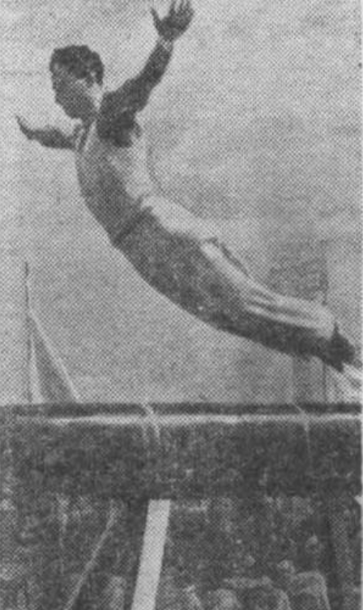

Nikolai Seryi (USSR)
1937 World Workers Olympiad AA Champion
USSR AA Champion (1943, 1945, 1946)

Nikolai was born in 1913 in Kerch, and was the youngest of seven children. He participated in several different sports as a boy and decided to concentrate on gymnastics after enrolling in Leningrad's Lesgaft Institute. A three-time USSR all-around champion, he was one of the Soviet Union's top gymnasts for nearly twenty years. Seryi was the alternate at the 1952 Helsinki Olympics. Read more about his life and gymnastics career here.
Competition Results
1934
All-Russian Championships: 1st Team, 1st AA
USSR Championships: 3rd Team, 2nd AA
1936
USSR Championships: 2nd AA
1937
World Workers Olympiad: 1st Team, 1st AA, 1st R
1938
Leningrad Championships: 1st AA
USSR Championships: 4th AA
1939
Tbilisi Gymnastics Festival: 2nd Team, 2nd AA
USSR Championships: 4th AA
1940
Leningrad Team Championships: 1st Team
1943
Moscow Championships: 2nd AA
USSR Championships: 1st AA
1944
Trade Unions Championships: 1st AA
USSR Championships: 2nd AA
1945
USSR Championships: 1st Team, 1st AA
1946
Moscow Championships: 4th AA
USSR Championships: 1st Team, 1st AA, 1st FX
USSR Team and Individual Championships: 2nd Team, 1st AA, 2nd PH 2nd R
1947
Trade Unions Championships: 1st AA, 1st FX, 1st R, 1st V, 1st PB, 1st HB
USSR Individual Events Championships: 2nd FX
1948
USSR Championships: 1st Team, 4th AA
1949
Moscow Championships: 2nd AA, 1st PB
Trade Unions Championships: 2nd AA, 1st R, 1st HB
USSR Championships: 1st Team, 10th AA
1950
USSR Championships: 4th AA
USSR-HUN Dual Meet: 1st Team, 1st R, 3rd PB, 4th HB
1951
Moscow Championships: 2nd AA
This page was created on July 01, 2026.
© Gymn Forum